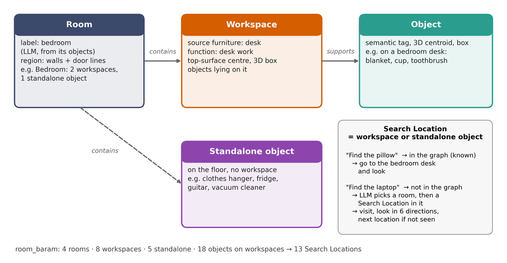
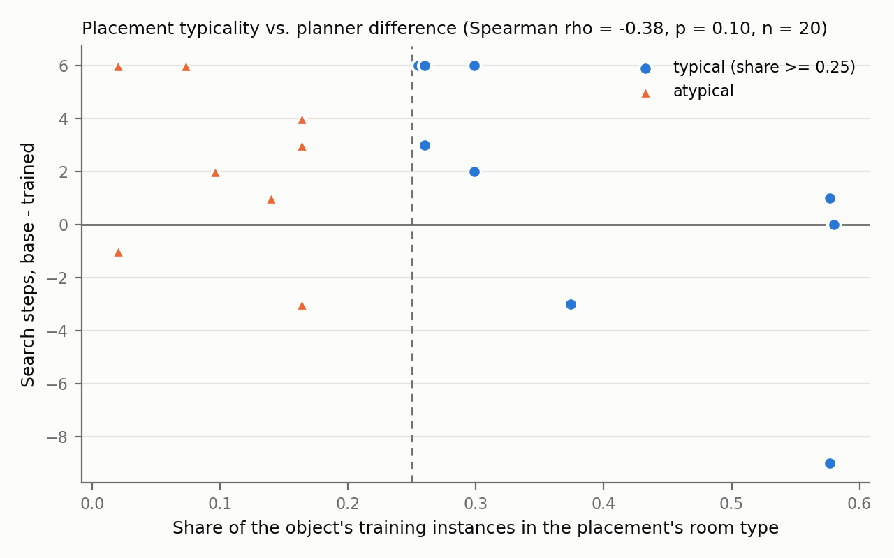

Where would it be?
An unknown target should be looked for where it plausibly is, not at the nearest place first. The graph keeps which room and which furniture surface each object belongs to, so the planner can reason about plausible places.
BARAM Robotics Club · 2026
Object search with a hierarchical scene graph and a small LLM planner
Ask the robot to “find the laptop”. If the laptop is in its map, it goes there. If it is not, the robot has to guess where a laptop would be, go and look, and guess again. AtHOME turns the home into a hierarchical scene graph (Room → Workspace → Object), so the guess is a choice among a few rooms and furniture surfaces, and lets a 4B-parameter LLM, distilled from GPT-4.1, make that choice on the robot in under a second.
Real robot, 20 pre-registered placements of objects not in the map, each searched by both planners
An unknown target should be looked for where it plausibly is, not at the nearest place first. The graph keeps which room and which furniture surface each object belongs to, so the planner can reason about plausible places.
Grouping objects under their furniture cuts the planner prompt from ≥ 20,615 to 3,990 tokens per episode, and the candidates per decision from 84.7 to 6.2.
The distilled Qwen3-4B matches the GPT-4.1 teacher on the same episodes and decides in about 0.7 s on our own server, instead of 2.6 s.
Every Search Location carries a 3D box, so a decision becomes a reachable goal pose with a clear view of the furniture.

Rooms come from the wall map and door lines; an LLM labels each room from the objects in it (9-vote majority). Furniture that holds objects becomes a Workspace, and objects attach to the workspace under them. Furniture on the floor with nothing on it stays a standalone object.
A Search Location is a workspace or a standalone object: the unit the planner chooses and the robot visits.

GPT-4.1 acts as the teacher on HM3D-Sem homes; only its choices that agree with the ground truth are kept. Qwen3-4B learns them with LoRA (SFT), one adapter per decision stage, and the workspace stage is further trained with GRPO in the same symbolic search environment. Simulation, held-out Val buildings (835 episodes, shortest path 1–30 m):
| Planner | SR ↑ | SPL ↑ | Visits ↓ | Decision latency ↓ |
|---|---|---|---|---|
| GPT-4.1 teacher | 0.951 | 0.480 | 4.4 | 2.61 s |
| Qwen3-4B + LoRA SFT | 0.941 | 0.492 | 4.4 | 0.65 s |
| Qwen3-4B + LoRA SFT + GRPO | 0.946 | 0.506 | 4.6 | 0.65 s |
SFT vs teacher: visits +0.01 (95% CI −0.64, +0.82), SPL +0.012 (−0.018, +0.038): comparable, not better. GRPO did not reduce the search cost beyond SFT.
Same untrained Qwen3-4B, three ways of describing the home. Simulation, Val + Test buildings (1,226 episodes, shortest path 1–30 m):
| Representation | SR ↑ | SPL ↑ | Visits ↓ | Prompt tokens / episode ↓ |
|---|---|---|---|---|
| Hierarchical scene graph (ours) | 0.884 | 0.423 | 8.2 | 3,990 |
| w/o Workspace layer | 0.841 | 0.409 | 11.3 | 8,691 |
| Unstructured object list | 0.821 | 0.371 | 13.9 | ≥ 20,615 |
The object list exceeded the 4,096-token context in 15.8% of decisions: the input no longer fits a small model.
The same two models in both settings: the untrained Qwen3-4B and the deployed adapters. Same metrics: success, SPL (shortest path over the longer of shortest and driven path, 0 on failure), visits (locations reached and observed), paired comparisons per episode.
| Metric | Simulation · HM3D Val, 1,495 episodes | Real robot · 20 paired placements | ||
|---|---|---|---|---|
| untrained | trained | untrained | trained | |
| Success (95% CI) | 99.5% (99.0–99.8) | 100% (99.7–100) | 95% (76–99) | 95% (76–99) |
| SPL | 0.410 | 0.470 | 0.395 | 0.465 |
| Visits, mean | 5.98 | 3.36 | 5.10 | 3.00 |
| Visits, median | 1 | 1 | 4.5 | 2 |
| Distance, mean (m) | 18.1 | 14.7 | 10.9 | 10.0 |
| Fewer visits: trained / untrained / tie | 554 / 161 / 780 (p < 0.001) | 14 / 4 / 2 (p = 0.027) | ||
The effect has the same size in both: about 0.6× the visits (0.56 in simulation, 0.59 on the robot) and +0.06–0.07 SPL, at the same success. On the robot, the trained planner also found the object 124 s sooner per pair (median, p = 0.015) and within 300 s in 19 of 20 placements, against 11.
Wilcoxon signed-rank tests on paired episodes. Simulation starts are random (often near the object, hence the median of 1 visit); every robot run starts from the hall, in no room. Distance and SPL differences on the robot point the same way but are not significant with 20 pairs.
Neither failure came from the planner's choice of where to look.

Known object
In the map: straight to its furniture.
Unknown object
Room, then furniture, then look.
A failure
Right desk, missed in dim light.
| Member | Role | Code |
|---|---|---|
| Seongmin Lee | Hierarchical scene graph, search planning and execution, LLM planner data and training, simulation and real-robot evaluation | AtHOME-object-search |
| Donggeon Yoon | Perception: LiDAR–camera fusion, open-vocabulary detection, SLAM and localization | athome |
| Sanghun Moon | Motion: MPPI local planner, Nav2 integration | Nav2Tidy |